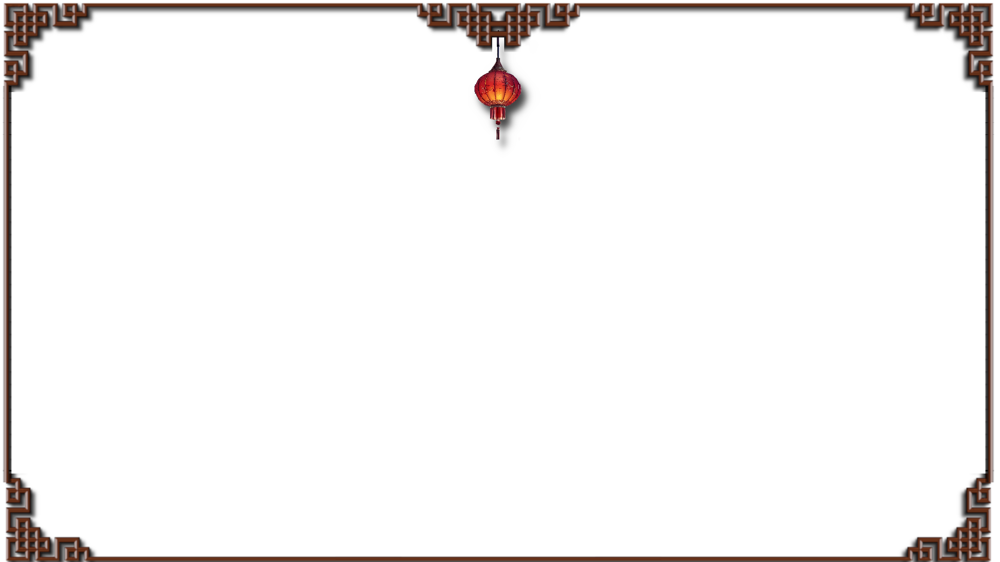

Über Uns
Willkommen, an Ihrem Ort für authentische asiatische Küche mitten in der Stadt.
Seit unserer Eröffnung im Jahr 2015 legen wir großen Wert auf frische Zutaten,
traditionelle Rezepte und ein Ambiente, in dem Sie sich rundum wohlfühlen können.
Unser Küchenteam kombiniert klassische Gerichte mit modernen Ideen und sorgt dafür,
dass jeder Besuch zu einem kulinarischen Erlebnis wird. Ob Sie ein schnelles Mittagessen genießen,
ein gemütliches Abendessen planen oder unsere Spezialitäten für besondere Anlässe entdecken möchten
wir heißen Sie jederzeit herzlich willkommen.
Bei uns dreht sich alles um Qualität, Geschmack und Gastfreundschaft.
Wir freuen uns darauf, Ihnen die Vielfalt der chinesischen Küche näherzubringen
und Sie immer wieder mit neuen Kreationen zu überraschen.
